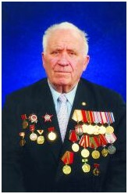

Николай Дмитриевич Колесов (1925- 2012) — доктор экономических наук, профессор, участник Великой Отечественной войны.
Основная тема научных исследований — общественная социалистическая собственность на средства производства. Большое внимание уделял методологическим проблемам политической экономии, в частности, вопросу о предмете и метода политической экономии, сущности и характеру действия экономических законов, проблеме экономических противоречий и т. д.
Работа научной школы, созданной Н. Д. Колесовым (среди его учеников — (В. Ф. Щербина, М. П. Рачков, В. М. Цветаев, А. А. Московцев, В. Н. Афанасьев и др.) получила высокую оценку научной общественности страны. Под его непосредственным руководством подготовлено и защищено более 70 докторских и около 200 кандидатских диссертаций.